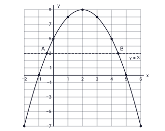
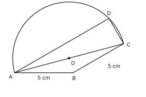
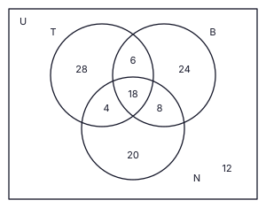

| (i) | |
| මාස 6ක පොලිය = රු. 10 080, එනිසා වසරක පොලිය = 10 080 × 2 = රු. 20 160 | 1 |
| අනුපාතය = 20 16096 000 × 100 = 21% | 1 |
| (ii)(a) | |
| සෑම මාසයකම ගෙවන ප්රාග්ධනය = 96 000 ÷ 6 = රු. 16 000 | 1 |
| මාස ආරම්භයේ ශේෂ: 96 000, 80 000, 64 000, 48 000, 32 000, 16 000 | 1 |
| ඓක්යය = රු. 336 000 (රුපියල්-මාස) | 1 |
| (ii)(b) | |
| පොලිය = ශේෂවල ඓක්යය × r100 × 112, එනිසා 336 000 × r100 × 112 = 10 080 | 1 |
| r = 10 080 × 12 × 100336 000 | 1 |
| ක්රමය 2හි වාර්ෂික අනුපාතය = 36% | 1 |
| (iii) | |
| 36% > 21%, එනිසා ක්රමය 2හි වාර්ෂික අනුපාතය වැඩිය | 1 |
| හේතුව: ක්රමය 2හි හිඟ මුදල සෑම මාසයකම අඩුවන බැවින්, එම මුළු පොලියම අය කරන්නේ ඉතා කුඩා සාමාන්ය ශේෂයක් මත ය (සාමාන්යයෙන් රු. 56 000ක්, ක්රමය 1හි රු. 96 000ට සාපේක්ෂව) | 1 |
මුළු ලකුණු: 10
| (i) | |
| x = 2 වටා සමමිතියෙන්, x = 3 හි අගය x = 1 හි අගයට සමාන වේ: y = 8 | 1 |
| (ii) | |
| දෙඅක්ෂයටම සුදුසු පරිමාණයක් (උදා: x අක්ෂයේ 2 cm = 1 ඒකකය, y අක්ෂයේ 1 cm = 1 ඒකකය), අක්ෂ නම් කර ඇත | 1 |
| (−2, −7), (−1, 0), (0, 5), (1, 8), (2, 9), (3, 8), (4, 5), (5, 0), (6, −7) ලක්ෂ්ය නිවැරදිව ලකුණු කිරීම (අවම වශයෙන් 7ක් නිවැරදි) | 1 |
| ලක්ෂ්ය හරහා සුමට වක්රයක්: උපරිම ලක්ෂ්යය (2, 9) වූ යටිකුරු පරාවලයක් (∩ හැඩය) | 1 |
| (iii) | |
| (අ) x = −1 හා x = 5 | 1 |
| (ආ) y = −(x + 1)(x − 5) (p = 1, q = −5) | 1 |
| (iv) | |
| (අ) y = 3 රේඛාව අඳින ලදී; A හා B හි x ≈ −0.4 හා x ≈ 4.4 ලෙස කියවීම (−0.5 සිට −0.4 දක්වා හා 4.4 සිට 4.5 දක්වා පිළිගන්න) | 1 |
| y > 3 සඳහා x පරාසය: −0.4 < x < 4.4 | 1 |
| (ආ) AB = 4.4 − (−0.4) | 1 |
| AB ≈ 4.9 (4.8 – 5.0 පිළිගන්න); නිවැරදි අගය 2√6 ≈ 4.9 | 1 |

මුළු ලකුණු: 10
| (i) | |
| ABC සෘජුකෝණී ත්රිකෝණයේ BC = AC sin 20° | 1 |
| sin 20° = 0.3420 (වගුවෙන්) | 1 |
| BC = 60 × 0.3420 = 20.52 m | 1 |
| (ii) | |
| BD = 2 BC (DC = BC නිසා) = 2 × 20.52 = 41.04 m | 1 |
| tan ∠DEB = BDBE | 1 |
| = 41.0440 = 1.0260 | 1 |
| (iii) | |
| වගු: tan 45°42′ = 1.0247, 2′ සඳහා මධ්යන්ය අන්තරය = 0.0012 (tan 45°48′ = 1.0283) | 1 |
| ∠DEB = 45°44′ (45°42′ – 45°48′ පිළිගන්න) | 1 |
| (iv) | |
| ∠DEB − ∠CAB = 45°44′ − 20° = 25°44′ | 1 |
| 25°44′ > 25°, එනිසා ∠DEB, ∠CAB ට වඩා 25° කට වැඩියෙන් විශාල වේ | 1 |
මුළු ලකුණු: 10
| (i) | |
| ත්රිකෝණයේ වර්ගඵලය = 12 × 2x × 2x = 2x2 | 1 |
| සෘජුකෝණාස්රයේ වර්ගඵලය = (x + 1)(x − 5) = x2 − 4x − 5 | 1 |
| 2x2 − (x2 − 4x − 5) = 100 | 1 |
| x2 + 4x + 5 = 100, එනිසා x2 + 4x − 95 = 0 (පෙන්වන ලදී) | 1 |
| (ii) | |
| x = −4 ± √(16 + 380)2 = −4 ± √3962 | 1 |
| √396 = 6√11 = 6 × 3.32 = 19.92; x = −4 + 19.922 = 7.96 (x > 5 නිසා ඍණ මූලය ප්රතික්ෂේප කරයි) | 1 |
| x ≈ 8 cm | 1 |
| (iii) | |
| දිගම ඉම = 2√2 x = 2 × 1.41 × 8 | 1 |
| = 22.56 cm | 1 |
| 22.56 > 22, එනිසා දිගම ඉම 22 cm ට වැඩිය | 1 |
මුළු ලකුණු: 10
| (i) | |
| x + y = 120 | 1 |
| 85x + 130y = 12 450 | 1 |
| 85x + 85y = 10 200; අඩු කිරීමෙන්: 45y = 2 250 | 1 |
| y = 50 (විශාල කූඩ) | 1 |
| x = 120 − 50 = 70 (කුඩා කූඩ). පරීක්ෂාව: 85 × 70 + 130 × 50 = 5 950 + 6 500 = 12 450 | 1 |
| (ii) | |
| කුඩා කූඩයක ධාරිතාව n kg යැයි ගනිමු; විශාල කූඩයක ධාරිතාව (n + 4) kg | 1 |
| 70n + 50(n + 4) = 920 | 1 |
| 120n + 200 = 920 | 1 |
| 120n = 720 | 1 |
| n = 6; කුඩා කූඩයක kg 6ක් ඇත | 1 |
මුළු ලකුණු: 10
| (i) | |
| පන්ති මධ්ය අගයන්: 44.5, 54.5, 64.5, 74.5, 84.5, 94.5 | 1 |
| Σfx = 89 + 381.5 + 645 + 894 + 507 + 283.5 = 2 800; Σf = 40 | 1 |
| මධ්යන්යය = 2 80040 = පාන් ගෙඩි 70 | 1 |
| (ii) | |
| අපේක්ෂිත මුළු ගණන = 70 × 26 | 1 |
| = පාන් ගෙඩි 1 820 | 1 |
| (iii) | |
| ගෙඩියකට ලාභය = රු. 14 | 1 |
| අපේක්ෂිත ලාභය = 1 820 × 14 | 1 |
| = රු. 25 480 | 1 |
| (iv) | |
| පාන් ගෙඩි 60ට අඩුවෙන් විකුණූ දින: දින 2ක් (40 – 49) හා දින 7ක් (50 – 59); දිනකට විය හැකි අවම විකුණුම් පිළිවෙලින් 40 හා 50 වේ | 1 |
| අවම මුළු ගණන = 2 × 40 + 7 × 50 = 80 + 350 = පාන් ගෙඩි 430 | 1 |
මුළු ලකුණු: 10
| (i) | |
| AB = 5 cm නිවැරදිව ඇඳීම (±1 mm) | 1 |
| B හිදී 90° ඉදිකිරීම (චාප හා ලම්බ රේඛාව පෙනෙන්නට) සහ BA සිට එම පැත්තේම 60° ඉදිකිරීම (චාප පෙනෙන්නට), එවිට ∠ABX = 90° + 60° = 150° (මැන බලන්නේ නම් 148° – 152° පිළිගන්න) | 2 |
| (ii) | |
| BX මත BC = 5 cm වන සේ C සලකුණු කිරීම (B කේන්ද්රයෙන් AB අරයට කවකටු චාපය), AC යා කිරීම; AC ≈ 9.7 cm (9.5 – 9.9 පිළිගන්න) | 1 |
| (iii) | |
| A හා C වලින් AC අඩකට වඩා වැඩි සමාන අරයකින් AC දෙපැත්තේම හමුවන චාප ඇඳීම | 1 |
| ලම්බ සමච්ඡේදකය ඇඳ AC මධ්ය ලක්ෂ්යය O හිදී කැපීම | 1 |
| කේන්ද්රය O හා අරය OA ≈ 4.8 cm වන අර්ධ වෘත්තය B ට විරුද්ධ පැත්තේ AC මත ඇඳීම | 1 |
| (iv) | |
| A හරහා BC ට සමාන්තර රේඛාව ඉදිකිරීම (සමාන කෝණ ඉදිකිරීමේ චාප පෙනෙන්නට) | 1 |
| එය අර්ධ වෘත්තය D හිදී හමුවේ (AD ≈ 9.3 cm); CD යා කිරීම (CD ≈ 2.5 cm) | 1 |
| (v) | |
| ∠BAC = ∠BCA = (180° − 150°) ÷ 2 = 15°; AD ∥ BC නිසා ∠DAC = ∠ACB = 15° (ඒකාන්තර); ∠ADC = 90° (අර්ධ වෘත්තයේ කෝණය); ∠ACD = 180° − 90° − 15° = 75° (මැන බලන්නේ නම් 74° – 76° පිළිගන්න) | 1 |

මුළු ලකුණු: 10
| (i) | |
| DE = EC (E යනු CD හි මධ්ය ලක්ෂ්යය) | 1 |
| ∠DEG = ∠CEF (ප්රතිමුඛ කෝණ) | 1 |
| ∠EDG = ∠ECF (ඒකාන්තර කෝණ, AG ∥ BC); එනිසා △DGE ≅ △CFE (කෝ.පා.කෝ.) | 1 |
| (ii) | |
| (i) න් EG = EF; තවද DE = EC. එනිසා DGCF චතුරස්රයේ DC හා GF විකර්ණ එකිනෙක සමච්ඡේදනය කරයි | 1 |
| එනිසා DGCF සමාන්තරාස්රයකි. (විකල්පව DG = CF හා DG ∥ CF) | 1 |
| (iii) | |
| ∠BHF = ∠DEG (අනුරූප කෝණ, AH ∥ DC) | 1 |
| ∠BFH = ∠DGE (අනුරූප කෝණ, BC ∥ AG); එනිසා ත්රිකෝණ සමකෝණික වේ (තෙවන කෝණද සමාන වේ) | 1 |
| (iv) | |
| DG = CF ((i) න්) = 45 BC හා BF = 15 BC, එනිසා BFDG = 14 | 1 |
| සමරූපී ත්රිකෝණවලින්, BHDE = BFDG = 14 | 1 |
| DE = 12 DC = 12 AB, එනිසා BH = 14 × 12 AB = 18 AB | 1 |
මුළු ලකුණු: 10
| (i) | |
| එක් පිරමීඩයක පරිමාව = 13 × a2 × 3a = a3 | 1 |
| පිරමීඩ 15හි පරිමාව = 15a3 | 1 |
| සිලින්ඩරයේ පරිමාව = πr2 × 5r = 5πr3 | 1 |
| 15a3 = 5πr3, එනිසා a3 = π3 r3 (පෙන්වන ලදී) | 1 |
| (ii) | |
| a3 = 3.143 × 7.63; lg a3 = lg 3.14 + 3 lg 7.6 − lg 3 = 0.4969 + 3 × 0.8808 − 0.4771 | 1 |
| lg a3 = 2.6622, එනිසා a3 = 459.5 (459 – 460 පිළිගන්න) | 1 |
| lg a = 2.6622 ÷ 3 = 0.8874, a = 7.71; a ≈ 8 cm | 1 |
| (iii) | |
| ඝනකාභයේ පරිමාව = a × a × 3a = 3a3 = 3 × 512 = 1 536 cm3 | 1 |
| කපා ඉවත් කළ පිරමීඩයේ පරිමාව = a3 = 512 cm3 | 1 |
| ඉතිරි පරිමාව = 1 536 − 512 = 1 024 cm3 | 1 |
මුළු ලකුණු: 10
| (i) | |
| 30 m, 34 m, 38 m | 1 |
| (ii) | |
| Tn = a + (n − 1)d = 30 + 11 × 4 | 1 |
| = 74 m | 1 |
| (iii) | |
| S12 = 122 (30 + 74) | 1 |
| = 6 × 104 = 624 m | 1 |
| (iv) | |
| S13 = 132 (2a + 12 × 6) = 624 | 1 |
| 2a + 72 = 96 | 1 |
| a = 12 m | 1 |
| (v) | |
| 30 + 4(n − 1) = 12 + 6(n − 1) | 1 |
| 18 = 2(n − 1), n = 10: 10වන දිනයේදී (දෙකම 66 m බැගින් එළයි) | 1 |
මුළු ලකුණු: 10
| (i)(a) | |
| ∠OAT = 90° (ස්පර්ශ ලක්ෂ්යයේදී ස්පර්ශකය අරයට ලම්බ වේ) | 1 |
| ∠OBT = 90° (එම හේතුවම) | 1 |
| ∠OAT + ∠OBT = 180° (සම්මුඛ කෝණ පරිපූරක), එනිසා OATB වෘත්ත චතුරස්රයකි | 1 |
| (i)(b) | |
| △OAT හා △OBT හි: OA = OB (අරයන්), OT පොදු, ∠OAT = ∠OBT = 90° (ස. කෝ. කර්ණය, පාදය), එනිසා △OAT ≅ △OBT | 1 |
| එනිසා ∠AOT = ∠BOT, එනම් OT මගින් ∠AOB සමච්ඡේදනය වේ | 1 |
| (ii) | |
| ∠TBA = ∠TAB (TA = TB, බාහිර ලක්ෂ්යයකින් ස්පර්ශක, එනිසා △TAB සමද්විපාද වේ) | 2 |
| ∠ACB = ∠TAB (ඒකාන්තර ඛණ්ඩ ප්රමේයය: ස්පර්ශකය TA හා ජ්යාය AB අතර කෝණය ඒකාන්තර ඛණ්ඩයේ කෝණයට සමාන වේ) | 2 |
| △TAB හි: ∠ATB = 180° − 2∠TAB = 180° − 2∠ACB, එනිසා ∠ATB + 2∠ACB = 180° | 1 |
මුළු ලකුණු: 10
| (i) | |
| අයිතමයක් හෝ මිලදී ගත් ගණන = 120 − 12 = 108 | 1 |
| වර්ග දෙකක් හෝ ඊට වැඩි = 36 | 1 |
| වර්ගයක් පමණක් = 108 − 36 = 72 | 1 |
| (ii) | |
| අයිතම තුනම මිලදී ගත් ගණන x යැයි ගනිමු; එවිට වර්ග දෙකක් පමණක් මිලදී ගත් ගණනද x වේ | 1 |
| x + x = 36 | 1 |
| x = 18 | 1 |
| (iii) | |
| තේ හා බනිස් පමණක් = 6; වර්ග දෙකක් පමණක් = 18, එනිසා අනෙක් කලාප දෙකේ එකතුව 12. T හා N පමණක් = y, B හා N පමණක් = 2y යැයි ගනිමු: 3y = 12 | 1 |
| තේ හා පුවත්පත් පමණක් = 4; බනිස් හා පුවත්පත් පමණක් = 8 | 1 |
| (iv) | |
| n(T) = 56: T පමණක් = 56 − (6 + 4 + 18) = 28; n(N) = 50: N පමණක් = 50 − (4 + 8 + 18) = 20 | 1 |
| බනිස් පමණක් = 72 − 28 − 20 = 24 | 1 |

මුළු ලකුණු: 10